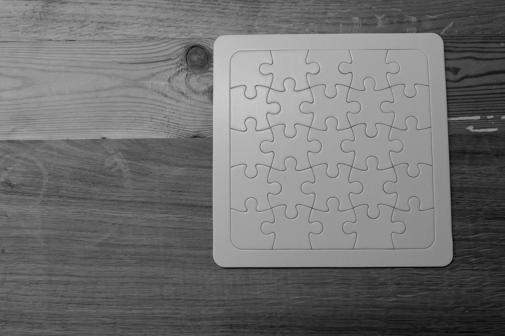

Education
I went back to school in 2015 at DePaul University
to complete my bachelor’s degree. My focus is on Web Development. It has been something
I always wanted to do and had a strong interest in. Now, I am looking for
other
ways to compliment my education and learn. Flexible to other forms of
development.
Experience
My professional experience started in
Customer Service. I have worked a couple of odd jobs throughout the years.
Eventually I landed in sales while still attending school. I have learned a lot
of soft skills while
being face to face and then building the talent needed to manage
clients over the phone.

Skills
Over the past couple of years, I have mainly
been trying to find new ways to stay fresh on the web. This includes doing side
projects for friends and studying whenever I can. Lately I have been venturing
into Java
and SQL.